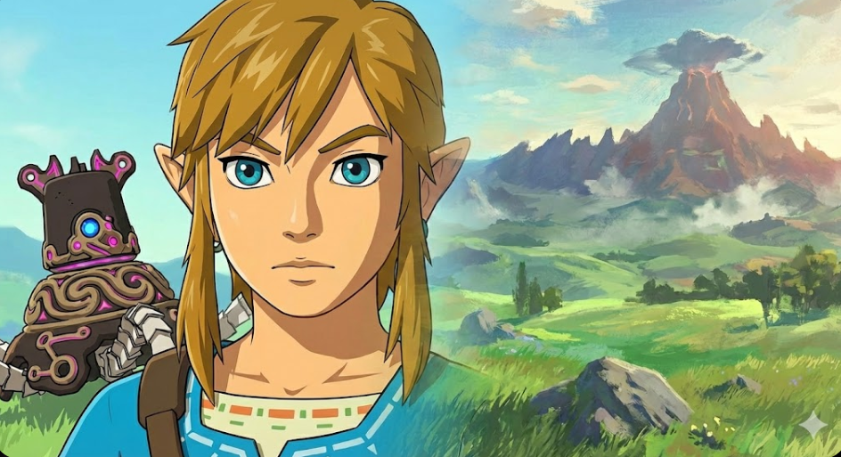
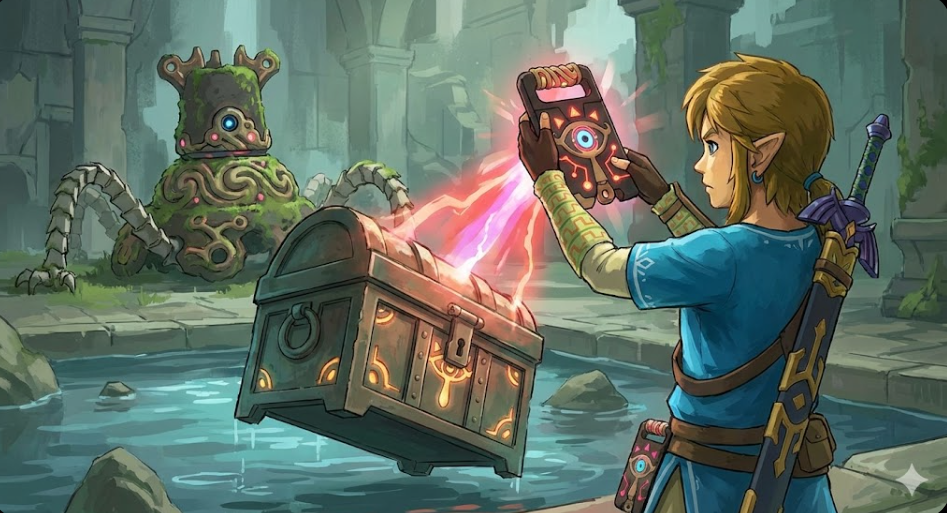
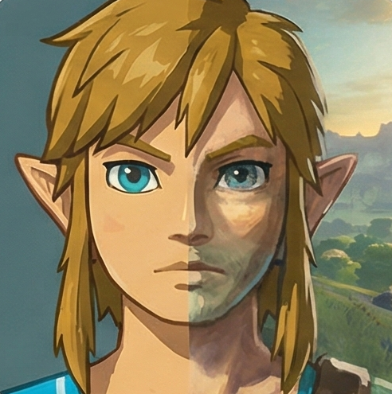
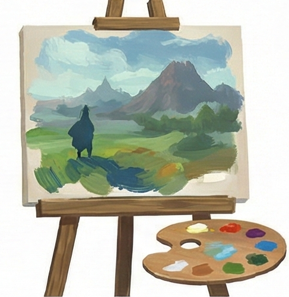
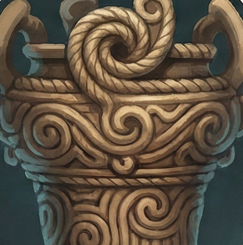
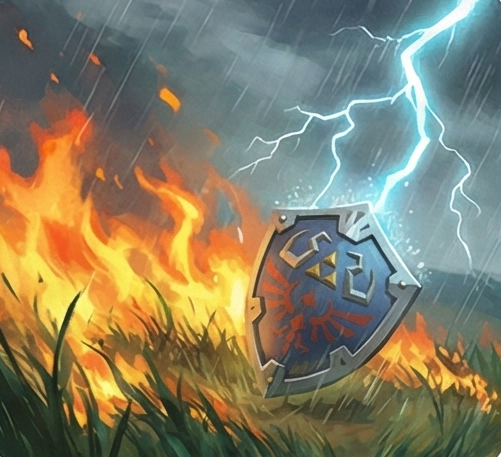
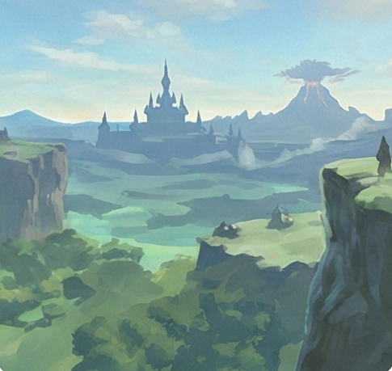

←
→
3. Apartado visual y artístico
Estilo "Open Air" · Inspiración Jomon · Motor de Química

Estilo Gráfico
"Open Air" - Cel-shading - Gouache
Diseño y Arte
Arte Jomon - Rediseño de Link

Innovaciones Técnicas
Motor de Química - Escala masiva
X
01 · Estilo Gráfico "Open Air"

Fusión de Estilos
Mezcla la técnica
Cel-shading
(colores planos) con iluminación realista. Nintendo lo llamó estilo "Open Air".

Inspiración Pictórica
Inspirado en la pintura al temple (Gouache) y el impresionismo ("En Plein Air") para que el mundo parezca un cuadro vivo.
X
02 · Diseño de Personajes y Escenarios

Periodo Jomon
La tecnología Sheikah se basa en la cerámica japonesa antigua (periodo Jomon) con patrones de cuerda y formas orgánicas.
Rediseño de Link
Sin el gorro verde clásico. Se usó la túnica azul para contrastar con el verde de la hierba de Hyrule.
X
03 · Innovaciones Gráficas

Motor de Química
El fuego se propaga con el viento, la lluvia moja superficies y la electricidad se conduce por el metal. Todo es visible.

Escala Masiva
Si puedes verlo en el horizonte, puedes ir. El motor gestiona distancias enormes sin tiempos de carga visibles.